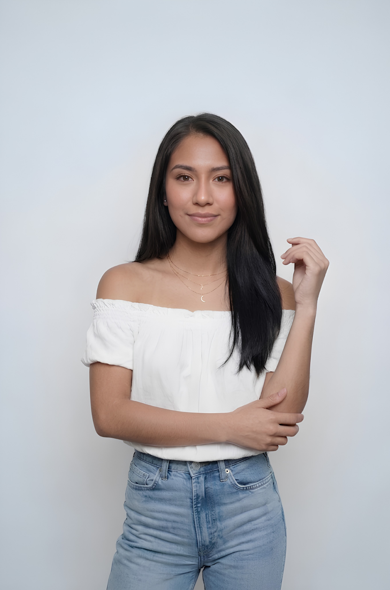
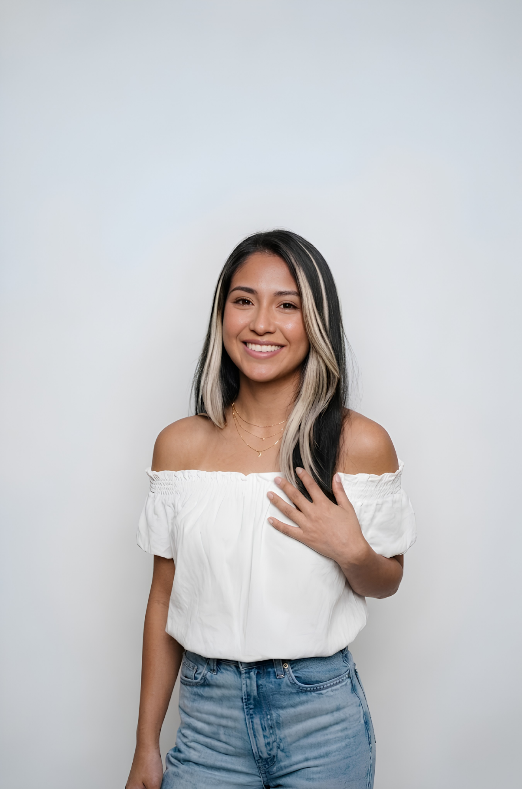
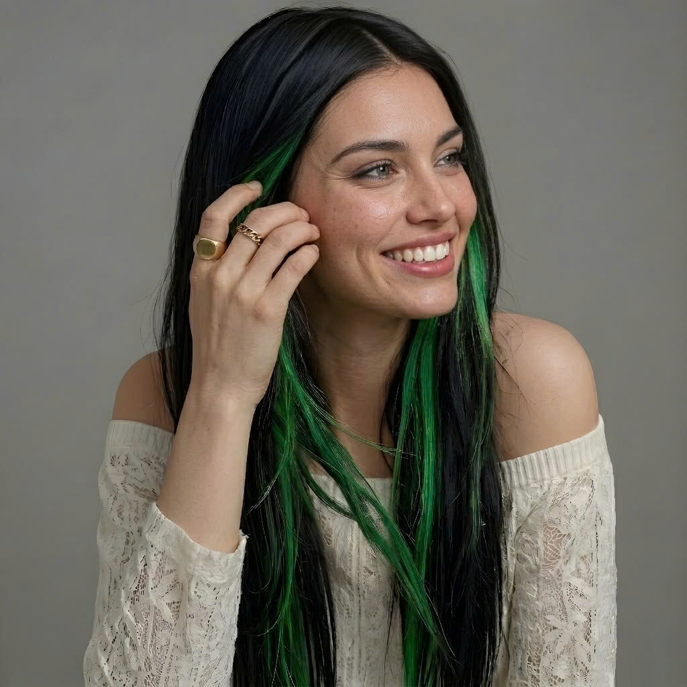
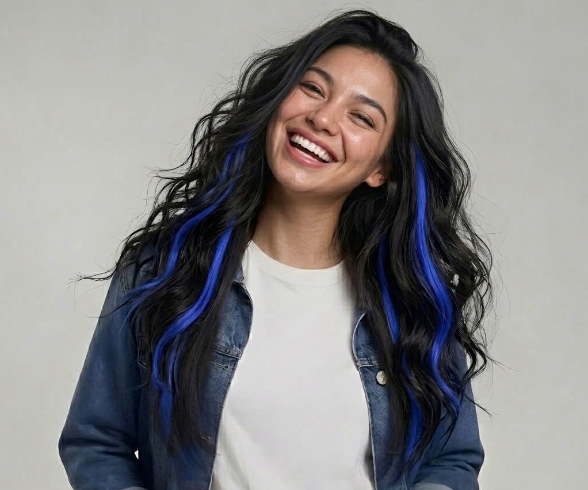

Selected Works





Creating high-quality AI-generated visuals for marketing campaigns, product promotion, social media, and creative storytelling. My work combines prompt engineering with marketing thinking to produce images that are both visually appealing and commercially useful.

As a freelance creator, I design AI-generated marketing visuals tailored to different brands and business goals. From product photography concepts to lifestyle scenes and advertising creatives, each image is carefully crafted through prompt engineering and refined to match the desired brand identity.
AI-generated product images for e-commerce, advertising, and promotional campaigns.
Creating realistic scenes that help customers visualize products in everyday life.
High-impact visuals for Facebook, Instagram, TikTok and online advertisements.
Developing creative concepts and visual directions before production.



Analyze the brand, target audience, and campaign objectives.
Build structured prompts to achieve consistent visual quality.
Iterate prompts and compositions until reaching the desired style.
Export optimized visuals for websites, advertising, or social media.